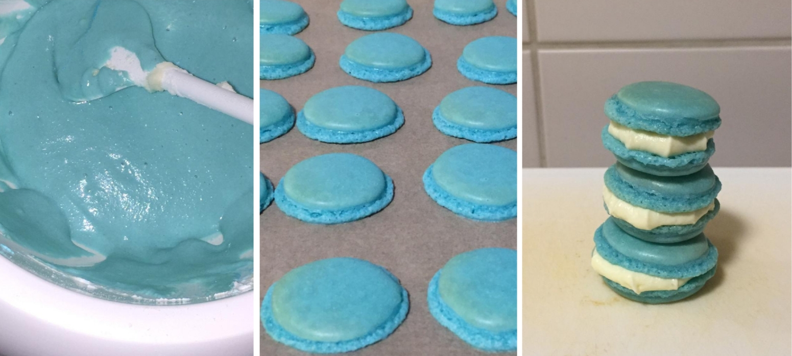

Sie schmecken schlimmer als sie aussehen...
Angesichts der aktuellen Lage wird im Fernsehen, Radio und Internet fast ausschließlich über Putins Krieg berichtet. Um in solchen Zeiten auch einmal auf andere Gedanken zu kommen sorgt dieser Artikel für etwas Abwechslung bezüglich der schlechten Nachrichten.
Sie begonnen als blaue Wolken, entwickelten sich zu flachen Mini-Ufos und endeten schließlich als französischer Albraum: Die Horror-Macarons. Im Folgenden finden Sie Bilder zur dramatischen Lage bezüglich dieses scheinbar unschuldigen Kleingebäcks.
